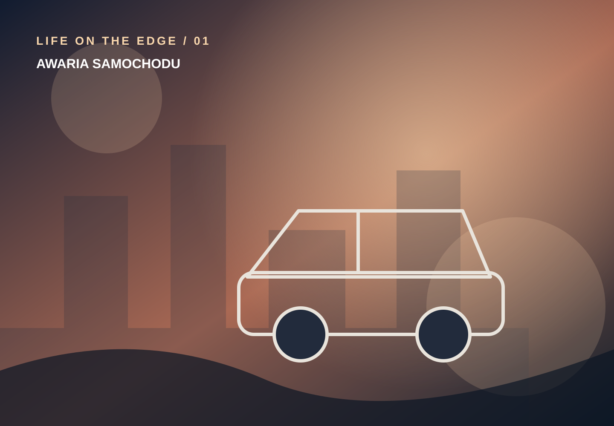

WYDARZENIEMIESIĄC 0 / 60
◉
Rozwiąż finansowy szyfr, aby odblokować strategie. Gra rozliczy kolejne pięć miesięcy, łącznie z ratami, odsetkami i odroczonymi konsekwencjami.
Twoje decyzje zapisują przyszłość. Ryzyko nie zawsze oznacza porażkę, a najwyższy stan konta nie zawsze oznacza wygraną.
Ten sam kod świata pozwala odtworzyć scenariusz. Nie wpisuj danych osobowych.

Rozwiąż finansowy szyfr, aby odblokować strategie. Gra rozliczy kolejne pięć miesięcy, łącznie z ratami, odsetkami i odroczonymi konsekwencjami.
Nie ma jednej definicji sukcesu. Przeanalizuj liczby i koszty alternatywne swoich wyborów.
Zwróć uwagę: alternatywne decyzje mogą zmieniać wynik, ale nie gwarantują zysku. Warianty i stopy zwrotu są elementami modelu dydaktycznego.